专题03 与数轴有关的数形结合思想（举一反三专项训练）
【北师大版2024】

【题型1 利用数轴确定数的范围】 1
【题型2 数轴与距离】 2
【题型3 数轴与相反数】 3
【题型4 数轴与绝对值】 3
【题型5 利用数轴比较大小】 4
【题型6 利用数轴的几何意义求最值】 4
【题型7 数轴中的相遇问题】 5
【题型8 数轴中的折返问题】 6
【题型9 数轴中两线段和差倍分问题】 8
【题型10 数轴动点中的定值问题】 8

【题型1 利用数轴确定数的范围】
【例1】（2025·河北邯郸·二模）如图，数轴上有三个点A，B，C，其中C是线段AB的中点，则原点O的位置（ ）

A．位于线段AC上，且靠近A点 B．位于线段AC上，且靠近C点
C．位于线段BC上，且靠近B点 D．位于线段BC上，且靠近C点
【变式1-1】（24-25七年级上·江苏常州·期末）若数a在数轴上对应点的位置如图所示，则表示a+4的点在（ ）

A．线段AB上 B．线段CD上 C．线段DE上 D．线段FG上
【变式1-2】（24-25七年级上·河北唐山·期中）如图，表示数a的点在线段AB上，则表示数a的相反数的点所在的线段是（ ）

A．AB B．BO C．OC D．CD
【变式1-3】（2023七年级上·全国·专题练习）如图，数轴上有A，B两个点，如果点C也在数轴上，且AC+BC=3，那么点C所在的位置可能在（ ）
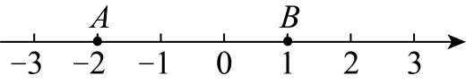
A．点A左侧 B．点A和点B之间
C．点B右侧 D．无法确定
【题型2 数轴与距离】
【例2】（24-25七年级上·江苏宿迁·阶段练习）如图1，点A，B，C是数轴上从左到右排列的三个点，分别对应的数为−5，b，4，某同学将刻度尺如图2放置，使刻度尺上的数字0对齐数轴上的点A，发现点B对应刻度1.8cm，点C对齐刻度5.4cm．则数轴上点B所对应的数b为（ ）
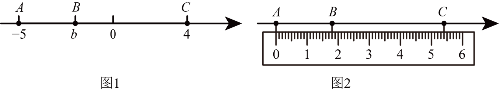
A．−2 B．−1 C．3 D．−3.2
【变式2-1】（24-25七年级下·江苏连云港·期中）如图，把一个平行四边形纸板的一边紧靠数轴平移．点P平移的距离PP′为（ ）

A．1 B．2 C．3 D．4
【变式2-2】（24-25七年级下·重庆·阶段练习）如图，点A是硬币圆周上一点，点A与数2所对应的点重合．假设硬币的直径为1个单位长度，若将硬币按如图所示的方向滚动（无滑动）一圈，点A恰好与数轴上点A′重合，则点A′对应的实数是（ ）

A．π−2 B．−π+2 C．−2π−2 D．−2π+2
【变式2-3】（2025·河北秦皇岛·一模）如图，数轴上两个相邻刻度的距离是一个单位长度，点A、B、C、D对应的位置如图所示，它们所表示的数分别是a、b、c、d，且d−b+c=10，则点C表示的数是（ ）
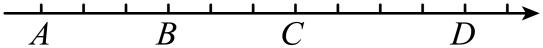
A．−6 B．−3 C．0 D．3
【题型3 数轴与相反数】
【例3】（2025·河南商丘·二模）如图，数轴上点P与点N表示的数是一对相反数，则与原点距离最近的点是（ ）

A．点P B．点Q C．点M D．点N
【变式3-1】（24-25七年级上·江苏无锡·阶段练习）若表示互为相反数的两个数的点A、B在数轴上的距离为16个单位长度，点A沿数轴先向右运动2秒，再向左运动5秒到达点C，设点A的运动速度为每秒2个单位长度，则点C在数轴上表示的数的相反数为 ．
【变式3-2】（2024七年级上·全国·专题练习）点A、B、D在数轴上的位置如图所示，点A、B表示的数互为相反数，若点B所表示的数为2，且AB=BD，则点D所表示的数为（ ）
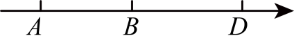
A．2 B．4 C．6 D．8
【变式3-3】（24-25七年级上·江苏连云港·阶段练习）已知数轴上M，N，P，Q四点所表示的数分别为m，n，p，q且m<n<p<q，其中有两个数的和为0，且满足mnpq>0．若MN=1,NP=4,PQ=5．则这四个数中可能互为相反数的是 ．
【题型4 数轴与绝对值】
【例4】（24-25七年级上·陕西安康·期末）有理数a，b，c在数轴上的对应点的位置如图所示，若a与b的绝对值相等，则下列说法正确的是（ ）

A．a>c B．a>−c C．b<−a D．b−c=b−c
【变式4-1】（24-25七年级上·江苏淮安·阶段练习）有理数a，b，c，d在数轴上的对应点如图所示，这四个数中绝对值最小的是 ．

【变式4-2】（23-24七年级上·河北石家庄·阶段练习）如图，小明在写作业时不慎将两滴墨水滴在数轴上，对于结论Ⅰ和Ⅱ，下列判断正确的是（ ）
结论Ⅰ：墨水遮住了绝对值不大于3的所有整数；结论Ⅱ：墨水遮住的整数之和为3
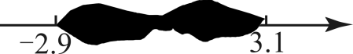
A．Ⅰ和Ⅱ都对 B．Ⅰ和Ⅱ都不对 C．Ⅰ对Ⅱ不对 D．Ⅰ不对Ⅱ对
【变式4-3】（24-25七年级上·辽宁沈阳·期末）四个有理数m，n，p，q在数轴上的位置如图所示，若m+p=0，则m，n，p，q四个有理数中，绝对值最大的是 ．

【题型5 利用数轴比较大小】
【例5】已知有理数a，b在数轴上的位置如图所示，则a，−b，−a，b从大到小的顺序为（ ）

A．b>a>−a>−b B．−a>−b>a>b
C．b>−a>a>−b D．−a>a>−b>b
【变式5-1】（24-25六年级上·山东淄博·期末）请在如图所示的“只有单位长度和正方向，还未标出原点”的数轴上表示下列各数，并按照从大到小的顺序将这些数用“>”号连接起来．
−4，512，−212，−1.5，−−2.5
【变式5-2】（24-25七年级上·广西柳州·期中）画出数轴，在数轴上标出表示下列各数的点，并按从大到小的顺序用“>”号把这些数连接起来：
−−5.5,0,−−2,+317,−1201,−22．
【变式5-3】（23-24七年级上·内蒙古呼和浩特·期末）有理数a、b所表示的点在数轴上的位置如图所示，将a、b、a、−b按从大到小的顺序排列，并用“>”号连接，结果为 ．
【题型6 利用数轴的几何意义求最值】
【例6】（23-24七年级上·重庆·期中）点A、B在数轴上分别表示数a、b，若A、B两点之间的距离表示为AB，则在数轴上A、B两点之间的距离AB=a−b．
①数轴上表示x、−2的两点之间的距离表示为x+2；
②若x−3+x+1=8，则x=−3；
③若存在整数x，使x−2+x+1的值最小时，则x=−1，0，2；
④若x−1+x+a的最小值是2，则a=−3．
则上述说法，正确的有（ ）个．

A．4 B．3 C．2 D．1
【变式6-1】（24-25七年级上·内蒙古包头·期中）同学们都知道|5−(−2)|表示5与(−2)之差的绝对值，也可理解为5与−2两数在数轴上所对的两点之间的距离，则对于任何有理数x，|x+1|+|x−1|+|x−2|取最小值时，相应的x的值是 ．
【变式6-2】（24-25七年级上·北京·期中）我们知道|x|表示x在数轴上对应的点到原点的距离，x−a表示 x 与 a 在数轴上对应的点之间的距离．例：x−1=2表示数x与1在数轴上表示的点的距离是2个单位长度，如图所示，即可得出x的值为−1或3．
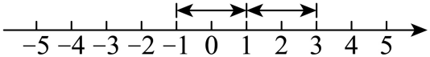
根据以上材料，解答下列问题：
(1)若x−2=4，则x的值为__________；
(2)若数轴上表示数a的点位于表示−3与2的两点之间，则求a+3+a−2的计算结果；
(3)已知有理数b，则b+5+b−3的计算结果是否有最小值？若有，请求出最小值；若没有，请说出理由．
【变式6-3】（24-25七年级上·湖北武汉·阶段练习）数轴上两点间的距离等于这两点所对应的数的差的绝对值．例：点A、B在数轴上分别对应的数为a，b，则A、B两点间的距离表示为AB=a−b，根据以上知识解题：
①当代数式x+1+x−1取最小值时，x的取值范围是 ，最小值为 ．
②求x−1+x−2+x−3+⋯+x−24的最小值为 ．
【题型7 数轴中的相遇问题】
【例7】（24-25七年级上·河北石家庄·期中）已知a是最大的负整数，b=−−5，c是−4的相反数，且a，b，c分别是点A，B，C在数轴上对应的数．
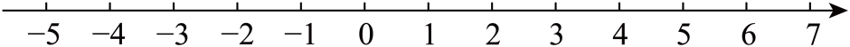
(1)求a，b，c的值，并在如图的数轴上标出点A，B，C；
(2)在数轴上，若点D到点A的距离刚好是5，则点D叫做点A的“幸福点”．求点A的幸福点D所表示的数；
(3)若动点P从点B出发沿数轴向负方向运动，动点Q同时从点A出发也沿数轴向负方向运动，点P的速度是每秒1个单位长度，点Q的速度是每秒3个单位长度，求运动几秒后，点Q可以追上点P？
【变式7-1】（2024七年级上·江苏·专题练习）已知，如图A、B分别为数轴上的两点，A点对应的数为−10，B点对应的数为90．

(1)与A、B两点距离相等的M点对应的数是 ；
(2)现在有一只电子蚂蚁P从B点出发时，以5个单位/秒的速度向左运动，同时另一只电子蚂蚁Q恰好从A点出发，以3个单位/秒的速度向右运动，设两只电子蚂蚁在数轴上的C点相遇，则C点对应的数是 ；
【变式7-2】（22-23七年级上·山东青岛·期末）数轴上点A表示−8，点B表示6，点C表示12，点D表示18．如图，将数轴在原点O和点B，C处各折一下，得到一条“折线数轴”．在“折线数轴”上，动点M从点A出发，以4个单位/秒的速度沿着折线数轴的正方向运动，从点O运动到点C期间速度变为原来的一半，过点C后继续以原来的速度向终点D运动；点M从点A出发的同时，点N从点D出发，一直以3个单位/秒的速度沿着“折线数轴”负方向向终点A运动．其中一点到达终点时，两点都停止运动．设运动的时间为t秒，t= 时，M、N两点相遇（结果化为小数）．
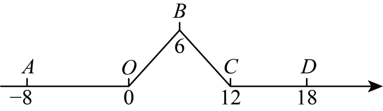
【变式7-3】（24-25七年级上·山西吕梁·期末）已知a是最大的负整数，b是−5的相反数，且a,b分别是点A,B在数轴上对应数．
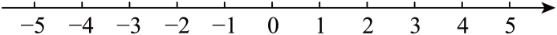
(1)求a,b的值，并在数轴上标出点A,B；
(2)若动点P从点A出发沿数轴正方向运动，动点Q同时从点B出发也沿数轴正方向运动，点P的速度每秒5个单位长度，点Q的速度是每秒3个单位长度，若运动t秒后，点P可以追上点Q，求t的值．
【题型8 数轴中的折返问题】
【例8】（23-24七年级上·江苏无锡·阶段练习）四个点A、B、C、D在数轴上的位置如图所示，已知CD=2，BC=3，AC=15，若点C为原点，点P、Q分别从A、D两点同时出发，点P以每秒3个单位长度的速度向右运动，到达C点后立即按原速向A折返；点Q以每秒1个单位长度的速度向左运动．当 P、Q都到达点A时运动停止，设运动时间为t（单位：秒）．

(1)当t=3时，求点P与点Q之间的距离；
(2)当t= 时，点P到达点B，此时点Q表示的数是 ；
(3)当t为何值时，P、Q两点相距2个单位？
【变式8-1】（23-24七年级上·湖北·期末）如图，A点在数轴上对应的有理数是24；动点M从原点O点出发以1单位/秒的速度向右运动，动点N从A点出发以2单位/秒的速度向左运动，两个动点同时出发，设运动时间为t秒．
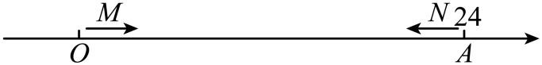
(1)请用含t的式子表示：动点M对应的数为__________，动点N对应的数为__________；
(2)如果在运动过程中，M、N两点相距6个单位长，求t的值；
(3)M、N在运动过程中，又有一动点p从原点O点开始以3单位/秒的速度向右运动（与M、N同时出发），当相遇点N时立即返回，返回途中遇到M点时又立即折返，如此往返，当M、N相遇时点p停止，此时点p一共运动了__________个单位长度．
【变式8-2】（23-24七年级上·江苏徐州·阶段练习）如图，已知数轴上A、B两定点对应的数是−20，40，动点M、N同时从点A出发向点B运动，点M的速度为3个单位长度/秒，点N的速度为2个单位长度/秒，到达点B后折返向点A继续运动，其中某点回到点A时，全部停止，经过 秒点A到点N的距离刚好等于点B到点M的距离．

【变式8-3】（24-25七年级上·湖南长沙·阶段练习）已知数轴上A，B两点对应的数分别为a，b，且a，b满足a+18+b−102=0，点C对应的数为14，点D对应的数为−10．
(1)求a，b的值；
(2)点A，B沿数轴同时出发相向匀速运动，点A的速度为4个单位/秒，点B的速度为1个单位/秒，若t秒时点A到原点的距离和点B到原点的距离相等，求t的值；
(3)在（2）的条件下，点A，B从起始位置同时出发，当A点运动到点C时，迅速以原来的速度返回，到达出发点后，又折返向点C运动．B点运动至D点后停止运动．当B停止运动时点A也停止运动．求在此过程中，A，B两点同时经过的点在数轴上对应的数．
【题型9 数轴中两线段和差倍分问题】
【例9】（23-24七年级上·江苏扬州·期末）已知数轴上A点代表−8，B点代表4，动点P、Q分别从A、B同时出发，向右运动，点P的速度为每秒2个单位长度，点Q的速度为每秒1个单位长度，设运动时间为t秒，当t= 时，2OP−OQ=3．（当点P与点Q重合时，P、Q两点停止运动）

【变式9-1】（24-25七年级上·河南郑州·期末）如图，点A和B在数轴上表示的数分别是−6和8，动点P从A出发，以1个单位每秒的速度沿射线AB的方向向右运动，同时动点Q从点B出发，以3个单位每秒的速度沿射线BA的方向向左运动，运动时间为t秒t>0，当点A，P，Q这三点中恰好有一点是以另外两点为端点的线段的中点时，t的值为 ．

【变式9-2】（24-25七年级上·河南郑州·期末）已知点A，B在数轴上对应的数分别为a，b，且a+6+b−42=0，若动点P在数轴上对应的数为x，当PA＋PB＝16时，x的值为 ．
【变式9-3】（23-24九年级上·甘肃兰州·期中）数轴上有A，B，C三点，给出如下定义：若其中一个点到其他两个点之间的距离相等时，则称该点是其他两个点的“中点”，这三点为“中点关联点”．
例如数轴上点A，B，C所表示的数分别为1，3，5，此时点B是点A，C的中点．
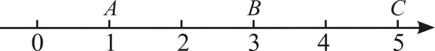
(1)若点A表示数−2，点B表示数1，若点B是点A与点C的中点，求点C所表示的数；
(2)点A表示数−10，点B表示数15，P为数轴上一个动点，若点A、B、P是“中点关联点”，求此时点P表示的数．
【题型10 数轴动点中的定值问题】
【例10】（23-24七年级上·湖北孝感·期末）如图，数轴上点A，B（点A在点B左边）所对应的数a，b满足a+3+(b−5)2=0．P为数轴上一动点，其对应的数为x，O为原点．
(1)若BP=1，求x的值；
(2)若PB=3PA，求x的值；
(3)若点C为线段AB的中点，当点P在线段AB的延长线上运动时，PA+PBPC的值是否为定值（即确定的值，不因点P位置的变化而变化）？如是，请求出这个定值；如不是，也请说明理由．
【变式10-1】（23-24七年级上·四川成都·期中）如图：在数轴上点A表示数a，点B表示数b，点C表示数c,b是最大的负整数，且a,c满足a+3+c−5=0．
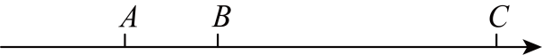
(1)a= ______，b= _______，c= ______；
(2)如果点P表示的数为x，当P点到B、C两点的距离之和为8时，x= ________．
(3)点A,B,C开始在数轴上运动，若点A以每秒1个单位长度的速度向左运动，同时，点B和点C分别以每秒2个单位长度和3个单位长度的速度向右运动，假设t秒钟过后，若点A与点B之间的距离表示为AB，点B与点C之间的距离表示为BC，则AB=________，BC=________．（用含t的代数式表示）
(4)在（3）的条件下，3BC−AB的值是否随着时间t的变化而改变？若变化，请说明理由；若不变，请求其值．
【变式10-2】（24-25七年级上·福建厦门·期中）已知：在一条东西向的双轨铁路上迎面驶来一快一慢两列火车，快车长AB=2（单位长度），慢车长CD=4（单位长度），设正在行驶途中的某一时刻，如图，以两车之间的某点O为原点，取向右方向为正方向画数轴，此时快车头A在数轴上表示的数是a，慢车头C在数轴上表示的数是b．若快车AB以6个单位长度/秒的速度向右匀速继续行驶，同时慢车CD以2个单位长度/秒的速度向左匀速继续行驶，且a+8+(b−16)2=0．

(1)a=_____；b=_____；此时刻快车头A与慢车头C之间相距______单位长度；
(2)从此时刻开始算起，再行驶多少秒钟两列火车的车头AC相距8个单位长度？
(3)此时在快车AB上有一位爱动脑筋的七年级学生乘客，他发现行驶中有一段时间t秒钟，他的位置P到两列火车头A、C的距离和加上到两列火车尾B、D的距离和是一个不变的值（即PA+PC+PB+PD为定值）．你认为该学生发现的这一结论是否正确？若正确，求出这段时间的长度及定值；若不正确，请说明理由．
【变式10-3】（24-25七年级上·福建漳州·期中）已知数轴上两点A、B所表示的数分别为a和b，且满足a−3+b+92=0，O为原点：
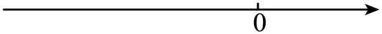
(1)a=______，b=______．
(2)若点C从O点出发向左运动，经过3秒后点C到A点的距离等于点C到B点的距离，求点C的运动速度？（结合数轴，进行分析．）
(3)若在数轴上点C表示的数为−3，当点A，B，C开始在数轴上运动，点B和点C分别以每秒2个单位长度和1个单位长度的速度向左运动，同时点A以每秒0.5个单位长度的速度向左运动，点A到达原点后立即以原速度向右运动，运动时间为t秒，若点A与点C之间的距离表示为AC，点B与点C之间的距离表示为BC，请问当t>6时，3BC−2AC的值是否随着时间t的变化而变化？若变化，说明理由；若不变，求出这个定值．